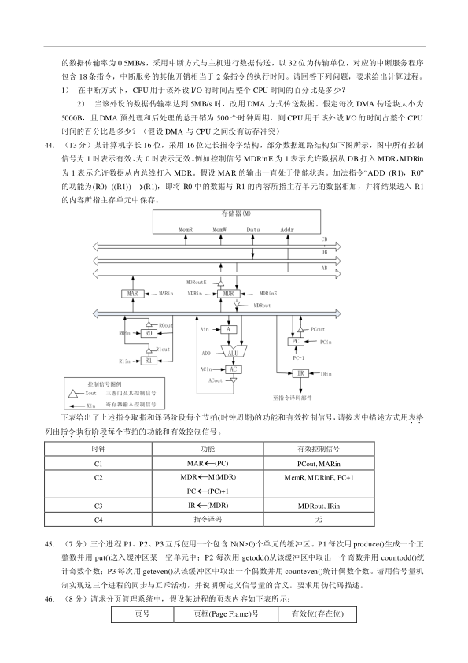
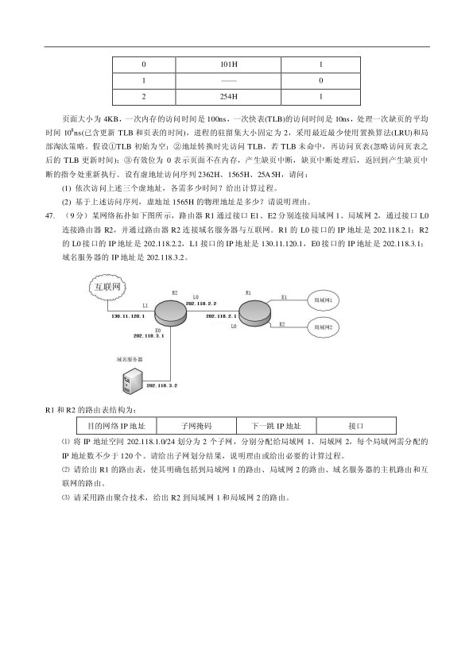
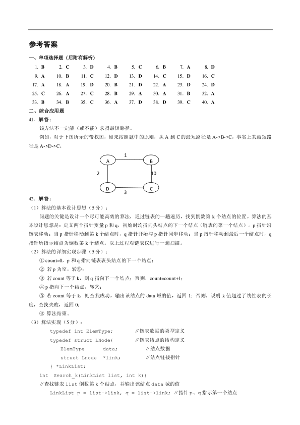
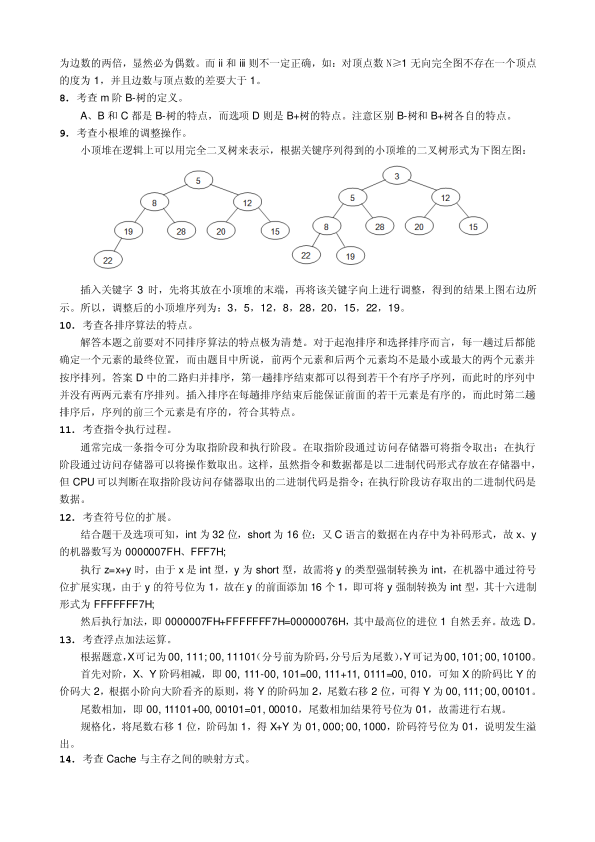

第 1 / 17 页

2009 年全国硕士研究生入学统一考试
计算机科学与技术学科联考
计算机学科专业基础综合试题
一、单项选择题：第1~40 小题，每小题2 分，共80 分。下列每题给出的四个选项中，只有一个选项最符
合试题要求。
1.
为解决计算机主机与打印机之间速度不匹配问题，通常设置一个打印数据缓冲区，主机将要输出的数据依
次写入该缓冲区，而打印机则依次从该缓冲区中取出数据。该缓冲区的逻辑结构应该是 。
A．栈 B．队列 C．树
D．图
2.
设栈S 和队列Q 的初始状态均为空，元素a,b,c,d,e,f,g 依次进入栈S。若每个元素出栈后立即进入队列Q，
且7 个元素出队的顺序是b,d,c,f,e,a,g，则栈S 的容量至少是 。
A．1 B．2 C．3 D．4
3.
给定二叉树如右图所示。设N 代表二叉树的根，L 代表根结点的左子树，R 代表根结
点的右子树。若遍历后的结点序列是3，1，7，5，6，2，4，则其遍历方式是
。
A．LRN
B．NRL
C．RLN
D．RNL
4.
下列二叉排序树中，满足平衡二叉树定义的是______。
5.
已知一棵完全二叉树的第6 层（设根为第1 层）有8 个叶结点，则该完全二叉树的结点个数最多是______。
A． 39 B．52 C．111 D．119
6.
将森林转换为对应的二叉树，若在二叉树中，结点u 是结点v 的父结点的父结点，则在原来的森林中，u
和v 可能具有的关系是______。
Ⅰ．父子关系 Ⅱ．兄弟关系
Ⅲ．u 的父结点与v 的父结点是兄弟关系
A． 只有Ⅱ B．Ⅰ和Ⅱ C．Ⅰ和Ⅲ D．Ⅰ、Ⅱ和Ⅲ
7.
下列关于无向连通图特性的叙述中，正确的是______。
I.
所有顶点的度之和为偶数
II.
边数大于顶点个数减1
III.
至少有一个顶点的度为1
A． 只有Ⅰ
B．只有Ⅱ
C．Ⅰ和Ⅱ
D．Ⅰ和Ⅲ
8.
下列叙述中，不．符合m 阶B 树定义要求的是______。
A．根节点最多有m 棵子树
B．所有叶结点都在同一层上
C．各结点内关键字均升序或降序排列
D．叶结点之间通过指针链接
9.
已知关键字序列5，8，12，19，28，20，15，22 是小根堆（最小堆），插入关键字3，调整后得到的小根
堆是______。
A．3，5，12，8，28，20，15，22，19
B．3，5，12，19，20，15，22，8，28
C．3，8，12，5，20，15，22，28，19
D．3，12，5，8，28，20，15，22，19
查看 / 复制本页文字
2009 年全国硕士研究生入学统一考试 计算机科学与技术学科联考 计算机学科专业基础综合试题 一、单项选择题：第1~40 小题，每小题2 分，共80 分。下列每题给出的四个选项中，只有一个选项最符 合试题要求。 1. 为解决计算机主机与打印机之间速度不匹配问题，通常设置一个打印数据缓冲区，主机将要输出的数据依 次写入该缓冲区，而打印机则依次从该缓冲区中取出数据。该缓冲区的逻辑结构应该是 。 A．栈 B．队列 C．树 D．图 2. 设栈S 和队列Q 的初始状态均为空，元素a,b,c,d,e,f,g 依次进入栈S。若每个元素出栈后立即进入队列Q， 且7 个元素出队的顺序是b,d,c,f,e,a,g，则栈S 的容量至少是 。 A．1 B．2 C．3 D．4 3. 给定二叉树如右图所示。设N 代表二叉树的根，L 代表根结点的左子树，R 代表根结 点的右子树。若遍历后的结点序列是3，1，7，5，6，2，4，则其遍历方式是 。 A．LRN B．NRL C．RLN D．RNL 4. 下列二叉排序树中，满足平衡二叉树定义的是______。 5. 已知一棵完全二叉树的第6 层（设根为第1 层）有8 个叶结点，则该完全二叉树的结点个数最多是______。 A． 39 B．52 C．111 D．119 6. 将森林转换为对应的二叉树，若在二叉树中，结点u 是结点v 的父结点的父结点，则在原来的森林中，u 和v 可能具有的关系是______。 Ⅰ．父子关系 Ⅱ．兄弟关系 Ⅲ．u 的父结点与v 的父结点是兄弟关系 A． 只有Ⅱ B．Ⅰ和Ⅱ C．Ⅰ和Ⅲ D．Ⅰ、Ⅱ和Ⅲ 7. 下列关于无向连通图特性的叙述中，正确的是______。 I. 所有顶点的度之和为偶数 II. 边数大于顶点个数减1 III. 至少有一个顶点的度为1 A． 只有Ⅰ B．只有Ⅱ C．Ⅰ和Ⅱ D．Ⅰ和Ⅲ 8. 下列叙述中，不．符合m 阶B 树定义要求的是______。 A．根节点最多有m 棵子树 B．所有叶结点都在同一层上 C．各结点内关键字均升序或降序排列 D．叶结点之间通过指针链接 9. 已知关键字序列5，8，12，19，28，20，15，22 是小根堆（最小堆），插入关键字3，调整后得到的小根 堆是______。 A．3，5，12，8，28，20，15，22，19 B．3，5，12，19，20，15，22，8，28 C．3，8，12，5，20，15，22，28，19 D．3，12，5，8，28，20，15，22，19
第 2 / 17 页
10.
若数据元素序列11，12，13，7，8，9，23，4，5 是采用下列排序方法之一得到的第二趟排序后的结果，
则该排序算法只能是______。
A．起泡排序 B．插入排序 C．选择排序 D．二路归并排序
11.
冯•诺依曼计算机中指令和数据均以二进制形式存放在存储器中，CPU 区分它们的依据是
。
A．指令操作码的译码结果 B．指令和数据的寻址方式
C．指令周期的不同阶段 D．指令和数据所在的存储单元
12.
一个C 语言程序在一台32 位机器上运行。程序中定义了三个变量x、y 和z，其中x 和z 为int 型，y 为short
型。当x=127，y=-9 时，执行赋值语句z=x+y 后，x、y 和z 的值分别是 。
A． x=0000007FH，y=FFF9H，z=00000076H
B． x=0000007FH，y=FFF9H，z=FFFF0076H
C． x=0000007FH，y=FFF7H，z=FFFF0076H
D． x=0000007FH，y=FFF7H，z=00000076H
13.
浮点数加、减运算过程一般包括对阶、尾数运算、规格化、舍入和判溢出等步骤。设浮点数的阶码和尾数
均采用补码表示，且位数分别为5 位和7 位（均含2 位符号位）。若有两个数X=27×29/32，Y=25×5/8，则
用浮点加法计算X+Y 的最终结果是
。
A．00111 1100010
B．00111 0100010
C．01000 0010001
D．发生溢出
14.
某计算机的Cache 共有16 块，采用2 路组相联映射方式（即每组2 块）。每个主存块大小为32 字节，按字
节编址。主存129 号单元所在主存块应装入到的Cache 组号是 。
A．0
B．1
C．4
D．6
15.
某计算机主存容量为64KB，其中ROM 区为4KB，其余为RAM 区，按字节编址。现要用2K×8 位的ROM
芯片和4K×4 位的RAM 芯片来设计该存储器，则需要上述规格的ROM 芯片数和RAM 芯片数分别
是 。
A．1、15 B．2、15 C．1、30 D．2、30
16.
某机器字长16 位，主存按字节编址，转移指令采用相对寻址，由两个字节组成，第一字节为操作码字段，
第二字节为相对位移量字段。假定取指令时，每取一个字节PC 自动加1。若某转移指令所在主存地址为
2000H，相对位移量字段的内容为06H，则该转移指令成功转移后的目标地址是_____。
A．2006H B．2007H C．2008H D．2009H
17.
下列关于RISC 的叙述中，错误
．．的是 。
A．RISC 普遍采用微程序控制器
B．RISC 大多数指令在一个时钟周期内完成
C．RISC 的内部通用寄存器数量相对CISC 多
D．RISC 的指令数、寻址方式和指令格式种类相对CISC 少
18.
某计算机的指令流水线由四个功能段组成，指令流经各功能段的时间（忽略各功能段之间的缓存时间）分
别为90 ns、80 ns、70 ns、和60 ns，则该计算机的CPU 时钟周期至少是 。
A．90 ns B．80 ns C．70 ns D．60 ns
19.
相对于微程序控制器，硬布线控制器的特点是
。
A．指令执行速度慢，指令功能的修改和扩展容易
B．指令执行速度慢，指令功能的修改和扩展难
C．指令执行速度快，指令功能的修改和扩展容易
D．指令执行速度快，指令功能的修改和扩展难
查看 / 复制本页文字
10.
若数据元素序列11，12，13，7，8，9，23，4，5 是采用下列排序方法之一得到的第二趟排序后的结果，
则该排序算法只能是______。
A．起泡排序 B．插入排序 C．选择排序 D．二路归并排序
11.
冯•诺依曼计算机中指令和数据均以二进制形式存放在存储器中，CPU 区分它们的依据是
。
A．指令操作码的译码结果 B．指令和数据的寻址方式
C．指令周期的不同阶段 D．指令和数据所在的存储单元
12.
一个C 语言程序在一台32 位机器上运行。程序中定义了三个变量x、y 和z，其中x 和z 为int 型，y 为short
型。当x=127，y=-9 时，执行赋值语句z=x+y 后，x、y 和z 的值分别是 。
A． x=0000007FH，y=FFF9H，z=00000076H
B． x=0000007FH，y=FFF9H，z=FFFF0076H
C． x=0000007FH，y=FFF7H，z=FFFF0076H
D． x=0000007FH，y=FFF7H，z=00000076H
13.
浮点数加、减运算过程一般包括对阶、尾数运算、规格化、舍入和判溢出等步骤。设浮点数的阶码和尾数
均采用补码表示，且位数分别为5 位和7 位（均含2 位符号位）。若有两个数X=27×29/32，Y=25×5/8，则
用浮点加法计算X+Y 的最终结果是
。
A．00111 1100010
B．00111 0100010
C．01000 0010001
D．发生溢出
14.
某计算机的Cache 共有16 块，采用2 路组相联映射方式（即每组2 块）。每个主存块大小为32 字节，按字
节编址。主存129 号单元所在主存块应装入到的Cache 组号是 。
A．0
B．1
C．4
D．6
15.
某计算机主存容量为64KB，其中ROM 区为4KB，其余为RAM 区，按字节编址。现要用2K×8 位的ROM
芯片和4K×4 位的RAM 芯片来设计该存储器，则需要上述规格的ROM 芯片数和RAM 芯片数分别
是 。
A．1、15 B．2、15 C．1、30 D．2、30
16.
某机器字长16 位，主存按字节编址，转移指令采用相对寻址，由两个字节组成，第一字节为操作码字段，
第二字节为相对位移量字段。假定取指令时，每取一个字节PC 自动加1。若某转移指令所在主存地址为
2000H，相对位移量字段的内容为06H，则该转移指令成功转移后的目标地址是_____。
A．2006H B．2007H C．2008H D．2009H
17.
下列关于RISC 的叙述中，错误
．．的是 。
A．RISC 普遍采用微程序控制器
B．RISC 大多数指令在一个时钟周期内完成
C．RISC 的内部通用寄存器数量相对CISC 多
D．RISC 的指令数、寻址方式和指令格式种类相对CISC 少
18.
某计算机的指令流水线由四个功能段组成，指令流经各功能段的时间（忽略各功能段之间的缓存时间）分
别为90 ns、80 ns、70 ns、和60 ns，则该计算机的CPU 时钟周期至少是 。
A．90 ns B．80 ns C．70 ns D．60 ns
19.
相对于微程序控制器，硬布线控制器的特点是
。
A．指令执行速度慢，指令功能的修改和扩展容易
B．指令执行速度慢，指令功能的修改和扩展难
C．指令执行速度快，指令功能的修改和扩展容易
D．指令执行速度快，指令功能的修改和扩展难
第 3 / 17 页
20.
假设某系统总线在一个总线周期中并行传输4 字节信息，一个总线周期占用2 个时钟周期，总线时钟频率
为10MHz，则总线带宽是______。
A．10MB/S B．20MB/S C．40MB/S D．80MB/S
21.
假设某计算机的存储系统由Cache 和主存组成，某程序执行过程中访存1 000 次，其中访问Cache 缺失（未
命中）50 次，则Cache 的命中率是
。
A．5%
B．9.5%
C．50%
D．95%
22.
下列选项中，能引起外部中断的事件是
。
A．键盘输入
B．除数为0
C．浮点运算下溢
D．访存缺页
23.
单处理机系统中，可并行的是
。
Ⅰ 进程与进程
Ⅱ 处理机与设备 Ⅲ 处理机与通道
Ⅳ 设备与设备
A．Ⅰ、Ⅱ和Ⅲ
B．Ⅰ、Ⅱ和Ⅳ
C．Ⅰ、Ⅲ和Ⅳ
D．Ⅱ、Ⅲ和Ⅳ
24.
下列进程调度算法中，综合考虑进程等待时间和执行时间的是______。
A．时间片轮转调度算法
B．短进程优先调度算法
C．先来先服务调度算法
D．高响应比优先调度算法
25.
某计算机系统中有8 台打印机，由K 个进程竞争使用，每个进程最多需要3 台打印机。该系统可能会发生
死锁的K 的最小值是______。
A．2
B．3
C．4
D．5
26.
分区分配内存管理方式的主要保护措施是______。
A．界地址保护 B．程序代码保护
C．数据保护
D．栈保护
27.
一个分段存储管理系统中，地址长度为32 位，其中段号占8 位，则最大段长是______。
A．28 字节 B．216 字节 C．224 字节 D．232 字节
28.
下列文件物理结构中，适合随机访问且易于文件扩展的是______。
A．连续结构
B．索引结构
C．链式结构且磁盘块定长
D．链式结构且磁盘块变长
29.
假设磁头当前位于第105 道，正在向磁道序号增加的方向移动。现有一个磁道访问请求序列为35，45，12，
68，110，180，170，195，采用SCAN 调度(电梯调度)算法得到的磁道访问序列是 ______。
A．110,170,180,195,68,45,35,12
B．110,68,45,35,12,170,180,195
C．110,170,180,195,12,35,45,68
D．12,35,45,68,110,170,180,195
30.
文件系统中，文件访问控制信息存储的合理位置是______。
A．文件控制块 B．文件分配表
C．用户口令表
D．系统注册表
31.
设文件F1 的当前引用计数值为1，先建立F1 的符号链接（软链接）文件F2，再建立F1 的硬链接文件F3，
然后删除F1。此时，F2 和F3 的引用计数值分别是______。
A． 0、1
B．1、1 C．1、2 D．2、1
32.
程序员利用系统调用打开I/O 设备时，通常使用的设备标识是 ______。
A．逻辑设备名
B．物理设备名
C．主设备号
D．从设备号
33.
在OSI 参考模型中，自下而上第一个提供端到端服务的层次是______。
A．数据链路层
B．传输层
C．会话层
D．应用层
34.
在无噪声情况下，若某通信链路的带宽为3kHz，采用4 个相位，每个相位具有4 种振幅的QAM 调制技术，
查看 / 复制本页文字
20.
假设某系统总线在一个总线周期中并行传输4 字节信息，一个总线周期占用2 个时钟周期，总线时钟频率
为10MHz，则总线带宽是______。
A．10MB/S B．20MB/S C．40MB/S D．80MB/S
21.
假设某计算机的存储系统由Cache 和主存组成，某程序执行过程中访存1 000 次，其中访问Cache 缺失（未
命中）50 次，则Cache 的命中率是
。
A．5%
B．9.5%
C．50%
D．95%
22.
下列选项中，能引起外部中断的事件是
。
A．键盘输入
B．除数为0
C．浮点运算下溢
D．访存缺页
23.
单处理机系统中，可并行的是
。
Ⅰ 进程与进程
Ⅱ 处理机与设备 Ⅲ 处理机与通道
Ⅳ 设备与设备
A．Ⅰ、Ⅱ和Ⅲ
B．Ⅰ、Ⅱ和Ⅳ
C．Ⅰ、Ⅲ和Ⅳ
D．Ⅱ、Ⅲ和Ⅳ
24.
下列进程调度算法中，综合考虑进程等待时间和执行时间的是______。
A．时间片轮转调度算法
B．短进程优先调度算法
C．先来先服务调度算法
D．高响应比优先调度算法
25.
某计算机系统中有8 台打印机，由K 个进程竞争使用，每个进程最多需要3 台打印机。该系统可能会发生
死锁的K 的最小值是______。
A．2
B．3
C．4
D．5
26.
分区分配内存管理方式的主要保护措施是______。
A．界地址保护 B．程序代码保护
C．数据保护
D．栈保护
27.
一个分段存储管理系统中，地址长度为32 位，其中段号占8 位，则最大段长是______。
A．28 字节 B．216 字节 C．224 字节 D．232 字节
28.
下列文件物理结构中，适合随机访问且易于文件扩展的是______。
A．连续结构
B．索引结构
C．链式结构且磁盘块定长
D．链式结构且磁盘块变长
29.
假设磁头当前位于第105 道，正在向磁道序号增加的方向移动。现有一个磁道访问请求序列为35，45，12，
68，110，180，170，195，采用SCAN 调度(电梯调度)算法得到的磁道访问序列是 ______。
A．110,170,180,195,68,45,35,12
B．110,68,45,35,12,170,180,195
C．110,170,180,195,12,35,45,68
D．12,35,45,68,110,170,180,195
30.
文件系统中，文件访问控制信息存储的合理位置是______。
A．文件控制块 B．文件分配表
C．用户口令表
D．系统注册表
31.
设文件F1 的当前引用计数值为1，先建立F1 的符号链接（软链接）文件F2，再建立F1 的硬链接文件F3，
然后删除F1。此时，F2 和F3 的引用计数值分别是______。
A． 0、1
B．1、1 C．1、2 D．2、1
32.
程序员利用系统调用打开I/O 设备时，通常使用的设备标识是 ______。
A．逻辑设备名
B．物理设备名
C．主设备号
D．从设备号
33.
在OSI 参考模型中，自下而上第一个提供端到端服务的层次是______。
A．数据链路层
B．传输层
C．会话层
D．应用层
34.
在无噪声情况下，若某通信链路的带宽为3kHz，采用4 个相位，每个相位具有4 种振幅的QAM 调制技术，
第 4 / 17 页
则该通信链路的最大数据传输速率是______。
A．12kbps B．24 kbps C．48 kbps
D．96 kbps
35.
数据链路层采用后退N 帧（GBN）协议，发送方已经发送了编号为0~7 的帧。当计时器超时时，若发送方
只收到0、2、3 号帧的确认，则发送方需要重发的帧数是______。
A．2
B．3
C．4
D．5
36.
以太网交换机进行转发决策时使用的PDU 地址是______。
A．目的物理地址
B．目的IP 地址
C．源物理地址
D．源IP 地址
37.
在一个采用CSMA/CD 协议的网络中，传输介质是一根完整的电缆，传输速率为1Gbps，电缆中的信号传
播速度是200 000km/s 。若最小数据帧长度减少800 比特，则最远的两个站点之间的距离至少需要______。
A．增加160m
B．增加 80m
C．减少 160m
D．减少 80m
38.
主机甲与主机乙之间已建立一个TCP 连接，主机甲向主机乙发送了两个连续的TCP 段，分别包含300 字
节和500 字节的有效载荷，第一个段的序列号为200，主机乙正确接收到两个段后，发送给主机甲的确认
序列号是______。
A．500
B．700
C．800
D．1000
39.
一个TCP 连接总是以1KB 的最大段长发送TCP 段，发送方有足够多的数据要发送。当拥塞窗口为16KB
时发生了超时，如果接下来的4 个RTT（往返时间）时间内的TCP 段的传输都是成功的，那么当第4 个
RTT 时间内发送的所有TCP 段都得到肯定应答时，拥塞窗口大小是______。
A．7 KB
B．8 KB
C．9 KB
D．16 KB
40.
FTP 客户和服务器间传递FTP 命令时，使用的连接是______。
A．建立在TCP 之上的控制连接
B．建立在TCP 之上的数据连接
C．建立在UDP 之上的控制连接
D．建立在UDP 之上的数据连接
二、综合应用题：第41~47 题，共70 分。
41.
（10 分）带权图（权值非负，表示边连接的两顶点间的距离）的最短路径问题是找出从初始顶点到目标顶
点之间的一条最短路径。假设从初始顶点到目标顶点之间存在路径，现有一种解决该问题的方法：
①设最短路径初始时仅包含初始顶点，令当前顶点u为初始顶点；
②选择离u最近且尚未在最短路径中的一个顶点v，加入到最短路径中，修改当前顶点u=v；
③重复步骤②，直到u是目标顶点时为止。
请问上述方法能否求得最短路径？若该方法可行，请证明之；否则，请举例说明。
42.
（15 分）已知一个带有表头结点的单链表，结点结构为：
假设该链表只给出了头指针list。在不改变链表的前提下，请设计一个尽可能高效的算法，查找链表中
倒数第k 个位置上的结点( k 为正整数)。若查找成功，算法输出该结点的data 域的值，并返回1；否则，只
返回0。要求：
⑴描述算法的基本设计思想；
⑵描述算法的详细实现步骤；
⑶根据设计思想和实现步骤，采用程序设计语言描述算法（使用C、C++或Java 语言实现），关键之处请
给出简要注释。
43.
（8 分）某计算机的CPU 主频为500MHz，CPI 为5（即执行每条指令平均需5 个时钟周期）。假定某外设
data
link
查看 / 复制本页文字
则该通信链路的最大数据传输速率是______。 A．12kbps B．24 kbps C．48 kbps D．96 kbps 35. 数据链路层采用后退N 帧（GBN）协议，发送方已经发送了编号为0~7 的帧。当计时器超时时，若发送方 只收到0、2、3 号帧的确认，则发送方需要重发的帧数是______。 A．2 B．3 C．4 D．5 36. 以太网交换机进行转发决策时使用的PDU 地址是______。 A．目的物理地址 B．目的IP 地址 C．源物理地址 D．源IP 地址 37. 在一个采用CSMA/CD 协议的网络中，传输介质是一根完整的电缆，传输速率为1Gbps，电缆中的信号传 播速度是200 000km/s 。若最小数据帧长度减少800 比特，则最远的两个站点之间的距离至少需要______。 A．增加160m B．增加 80m C．减少 160m D．减少 80m 38. 主机甲与主机乙之间已建立一个TCP 连接，主机甲向主机乙发送了两个连续的TCP 段，分别包含300 字 节和500 字节的有效载荷，第一个段的序列号为200，主机乙正确接收到两个段后，发送给主机甲的确认 序列号是______。 A．500 B．700 C．800 D．1000 39. 一个TCP 连接总是以1KB 的最大段长发送TCP 段，发送方有足够多的数据要发送。当拥塞窗口为16KB 时发生了超时，如果接下来的4 个RTT（往返时间）时间内的TCP 段的传输都是成功的，那么当第4 个 RTT 时间内发送的所有TCP 段都得到肯定应答时，拥塞窗口大小是______。 A．7 KB B．8 KB C．9 KB D．16 KB 40. FTP 客户和服务器间传递FTP 命令时，使用的连接是______。 A．建立在TCP 之上的控制连接 B．建立在TCP 之上的数据连接 C．建立在UDP 之上的控制连接 D．建立在UDP 之上的数据连接 二、综合应用题：第41~47 题，共70 分。 41. （10 分）带权图（权值非负，表示边连接的两顶点间的距离）的最短路径问题是找出从初始顶点到目标顶 点之间的一条最短路径。假设从初始顶点到目标顶点之间存在路径，现有一种解决该问题的方法： ①设最短路径初始时仅包含初始顶点，令当前顶点u为初始顶点； ②选择离u最近且尚未在最短路径中的一个顶点v，加入到最短路径中，修改当前顶点u=v； ③重复步骤②，直到u是目标顶点时为止。 请问上述方法能否求得最短路径？若该方法可行，请证明之；否则，请举例说明。 42. （15 分）已知一个带有表头结点的单链表，结点结构为： 假设该链表只给出了头指针list。在不改变链表的前提下，请设计一个尽可能高效的算法，查找链表中 倒数第k 个位置上的结点( k 为正整数)。若查找成功，算法输出该结点的data 域的值，并返回1；否则，只 返回0。要求： ⑴描述算法的基本设计思想； ⑵描述算法的详细实现步骤； ⑶根据设计思想和实现步骤，采用程序设计语言描述算法（使用C、C++或Java 语言实现），关键之处请 给出简要注释。 43. （8 分）某计算机的CPU 主频为500MHz，CPI 为5（即执行每条指令平均需5 个时钟周期）。假定某外设 data link
第 5 / 17 页

的数据传输率为0.5MB/s，采用中断方式与主机进行数据传送，以32 位为传输单位，对应的中断服务程序
包含18 条指令，中断服务的其他开销相当于2 条指令的执行时间。请回答下列问题，要求给出计算过程。
1） 在中断方式下，CPU 用于该外设I/O 的时间占整个CPU 时间的百分比是多少？
2） 当该外设的数据传输率达到5MB/s 时，改用DMA 方式传送数据。假定每次DMA 传送块大小为
5000B，且DMA 预处理和后处理的总开销为500 个时钟周期，则CPU 用于该外设I/O 的时间占整个CPU
时间的百分比是多少？（假设DMA 与CPU 之间没有访存冲突）
44.
（13 分）某计算机字长16 位，采用16 位定长指令字结构，部分数据通路结构如下图所示，图中所有控制
信号为1 时表示有效、为0 时表示无效。例如控制信号MDRinE 为1 表示允许数据从DB 打入MDR，MDRin
为1 表示允许数据从内总线打入MDR。假设MAR 的输出一直处于使能状态。加法指令“ADD (R1)，R0”
的功能为(R0)+((R1)) (R1)，即将R0 中的数据与R1 的内容所指主存单元的数据相加，并将结果送入R1
的内容所指主存单元中保存。
下表给出了上述指令取指和译码阶段每个节拍(时钟周期)的功能和有效控制信号，请按表中描述方式用表格
．．
列出指令执行阶段
．．．．．．每个节拍的功能和有效控制信号。
45.
（7 分）三个进程P1、P2、P3 互斥使用一个包含N(N>0)个单元的缓冲区。P1 每次用produce()生成一个正
整数并用put()送入缓冲区某一空单元中；P2 每次用getodd()从该缓冲区中取出一个奇数并用countodd()统
计奇数个数；P3 每次用geteven()从该缓冲区中取出一个偶数并用counteven()统计偶数个数。请用信号量机
制实现这三个进程的同步与互斥活动，并说明所定义信号量的含义。要求用伪代码描述。
46.
（8 分）请求分页管理系统中，假设某进程的页表内容如下表所示：
时钟
功能
有效控制信号
C1
MAR(PC)
PCout, MARin
C2
MDRM(MDR)
PC(PC)+1
MemR, MDRinE, PC+1
C3
IR(MDR)
MDRout, IRin
C4
指令译码
无
页号
页框(Page Frame)号
有效位(存在位)
查看 / 复制本页文字
的数据传输率为0.5MB/s，采用中断方式与主机进行数据传送，以32 位为传输单位，对应的中断服务程序 包含18 条指令，中断服务的其他开销相当于2 条指令的执行时间。请回答下列问题，要求给出计算过程。 1） 在中断方式下，CPU 用于该外设I/O 的时间占整个CPU 时间的百分比是多少？ 2） 当该外设的数据传输率达到5MB/s 时，改用DMA 方式传送数据。假定每次DMA 传送块大小为 5000B，且DMA 预处理和后处理的总开销为500 个时钟周期，则CPU 用于该外设I/O 的时间占整个CPU 时间的百分比是多少？（假设DMA 与CPU 之间没有访存冲突） 44. （13 分）某计算机字长16 位，采用16 位定长指令字结构，部分数据通路结构如下图所示，图中所有控制 信号为1 时表示有效、为0 时表示无效。例如控制信号MDRinE 为1 表示允许数据从DB 打入MDR，MDRin 为1 表示允许数据从内总线打入MDR。假设MAR 的输出一直处于使能状态。加法指令“ADD (R1)，R0” 的功能为(R0)+((R1)) (R1)，即将R0 中的数据与R1 的内容所指主存单元的数据相加，并将结果送入R1 的内容所指主存单元中保存。 下表给出了上述指令取指和译码阶段每个节拍(时钟周期)的功能和有效控制信号，请按表中描述方式用表格 ．． 列出指令执行阶段 ．．．．．．每个节拍的功能和有效控制信号。 45. （7 分）三个进程P1、P2、P3 互斥使用一个包含N(N>0)个单元的缓冲区。P1 每次用produce()生成一个正 整数并用put()送入缓冲区某一空单元中；P2 每次用getodd()从该缓冲区中取出一个奇数并用countodd()统 计奇数个数；P3 每次用geteven()从该缓冲区中取出一个偶数并用counteven()统计偶数个数。请用信号量机 制实现这三个进程的同步与互斥活动，并说明所定义信号量的含义。要求用伪代码描述。 46. （8 分）请求分页管理系统中，假设某进程的页表内容如下表所示： 时钟 功能 有效控制信号 C1 MAR(PC) PCout, MARin C2 MDRM(MDR) PC(PC)+1 MemR, MDRinE, PC+1 C3 IR(MDR) MDRout, IRin C4 指令译码 无 页号 页框(Page Frame)号 有效位(存在位)
第 6 / 17 页

页面大小为4KB，一次内存的访问时间是100ns，一次快表(TLB)的访问时间是10ns，处理一次缺页的平均
时间108ns(已含更新TLB 和页表的时间)，进程的驻留集大小固定为2，采用最近最少使用置换算法(LRU)和局
部淘汰策略。假设①TLB 初始为空；②地址转换时先访问TLB，若TLB 未命中，再访问页表(忽略访问页表之
后的TLB 更新时间)；③有效位为0 表示页面不在内存，产生缺页中断，缺页中断处理后，返回到产生缺页中
断的指令处重新执行。设有虚地址访问序列2362H、1565H、25A5H，请问：
(1) 依次访问上述三个虚地址，各需多少时间？给出计算过程。
(2) 基于上述访问序列，虚地址1565H 的物理地址是多少？请说明理由。
47.
（9 分）某网络拓扑如下图所示，路由器R1 通过接口E1、E2 分别连接局域网1、局域网2，通过接口L0
连接路由器R2，并通过路由器R2 连接域名服务器与互联网。R1 的L0 接口的IP 地址是202.118.2.1；R2
的L0 接口的IP 地址是202.118.2.2，L1 接口的IP 地址是130.11.120.1，E0 接口的IP 地址是202.118.3.1；
域名服务器的IP 地址是202.118.3.2。
R1 和R2 的路由表结构为：
目的网络IP 地址
子网掩码
下一跳IP 地址
接口
⑴将IP 地址空间202.118.1.0/24 划分为2 个子网，分别分配给局域网1、局域网2，每个局域网需分配的
IP 地址数不少于120 个。请给出子网划分结果，说明理由或给出必要的计算过程。
⑵请给出R1 的路由表，使其明确包括到局域网1 的路由、局域网2 的路由、域名服务器的主机路由和互
联网的路由。
⑶请采用路由聚合技术，给出R2 到局域网1 和局域网2 的路由。
0
101H
1
1
——
0
2
254H
1
查看 / 复制本页文字
页面大小为4KB，一次内存的访问时间是100ns，一次快表(TLB)的访问时间是10ns，处理一次缺页的平均 时间108ns(已含更新TLB 和页表的时间)，进程的驻留集大小固定为2，采用最近最少使用置换算法(LRU)和局 部淘汰策略。假设①TLB 初始为空；②地址转换时先访问TLB，若TLB 未命中，再访问页表(忽略访问页表之 后的TLB 更新时间)；③有效位为0 表示页面不在内存，产生缺页中断，缺页中断处理后，返回到产生缺页中 断的指令处重新执行。设有虚地址访问序列2362H、1565H、25A5H，请问： (1) 依次访问上述三个虚地址，各需多少时间？给出计算过程。 (2) 基于上述访问序列，虚地址1565H 的物理地址是多少？请说明理由。 47. （9 分）某网络拓扑如下图所示，路由器R1 通过接口E1、E2 分别连接局域网1、局域网2，通过接口L0 连接路由器R2，并通过路由器R2 连接域名服务器与互联网。R1 的L0 接口的IP 地址是202.118.2.1；R2 的L0 接口的IP 地址是202.118.2.2，L1 接口的IP 地址是130.11.120.1，E0 接口的IP 地址是202.118.3.1； 域名服务器的IP 地址是202.118.3.2。 R1 和R2 的路由表结构为： 目的网络IP 地址 子网掩码 下一跳IP 地址 接口 ⑴将IP 地址空间202.118.1.0/24 划分为2 个子网，分别分配给局域网1、局域网2，每个局域网需分配的 IP 地址数不少于120 个。请给出子网划分结果，说明理由或给出必要的计算过程。 ⑵请给出R1 的路由表，使其明确包括到局域网1 的路由、局域网2 的路由、域名服务器的主机路由和互 联网的路由。 ⑶请采用路由聚合技术，给出R2 到局域网1 和局域网2 的路由。 0 101H 1 1 —— 0 2 254H 1
第 7 / 17 页

参考答案
一、单项选择题（后附有解析）
1. B
2. C
3. D
4. B
5. C
6. B
7. A
8. D
9. A
10. B
11. C
12. D
13. D
14. C
15. D
16. C
17. A
18. A
19. D
20. B
21. D
22. A
23. D
24. D
25. C
26. A
27. C
28. B
29. A
30. A
31. B
32. A
33. B
34. B
35. C
36. A
37. D
38. D
39. C
40. A
二、综合应用题
41．解答：
该方法不一定能（或不能）求得最短路径。
例如，对于下图所示的带权图，如果按照题中的原则，从A 到C 的最短路径是A->B->C，事实上其最短路
径是A->D->C。
42．解答：
（1）算法的基本设计思想（5 分）：
问题的关键是设计一个尽可能高效的算法，通过链表的一趟遍历，找到倒数第k 个结点的位置。算法的基
本设计思想是：定义两个指针变量p 和q，初始时均指向头结点的下一个结点（链表的第一个结点）。p 指针沿
链表移动；当p 指针移动到第k 个结点时，q 指针开始与p 指针同步移动；当p 指针移动到最后一个结点时，q
指针所指示结点为倒数第k 个结点。以上过程对链表仅进行一遍扫描。
（2）算法的详细实现步骤（5 分）：
①count=0，p 和q 指向链表表头结点的下一个结点；
②若p 为空，转⑤；
③若count 等于k，则q 指向下一个结点；否则，count=count+1；
④p 指向下一个结点，转②；
⑤若count 等于k，则查找成功，输出该结点的data 域的值，返回1；否则，说明k 值超过了线性表的长
度，查找失败，返回0；
⑥算法结束。
（3）算法实现（5 分）：
typedef int ElemType;
∥链表数据的类型定义
typedef struct LNode{
∥链表结点的结构定义
ElemType
data;
∥结点数据
struct Lnode *link;
∥结点链接指针
} *LinkList;
int Search_k(LinkList list, int k){
∥查找链表list 倒数第k 个结点，并输出该结点data 域的值
LinkList p = list->link, q = list->link; ∥指针p、q 指示第一个结点
2
1
3
10
A
B
D
C
查看 / 复制本页文字
参考答案
一、单项选择题（后附有解析）
1. B
2. C
3. D
4. B
5. C
6. B
7. A
8. D
9. A
10. B
11. C
12. D
13. D
14. C
15. D
16. C
17. A
18. A
19. D
20. B
21. D
22. A
23. D
24. D
25. C
26. A
27. C
28. B
29. A
30. A
31. B
32. A
33. B
34. B
35. C
36. A
37. D
38. D
39. C
40. A
二、综合应用题
41．解答：
该方法不一定能（或不能）求得最短路径。
例如，对于下图所示的带权图，如果按照题中的原则，从A 到C 的最短路径是A->B->C，事实上其最短路
径是A->D->C。
42．解答：
（1）算法的基本设计思想（5 分）：
问题的关键是设计一个尽可能高效的算法，通过链表的一趟遍历，找到倒数第k 个结点的位置。算法的基
本设计思想是：定义两个指针变量p 和q，初始时均指向头结点的下一个结点（链表的第一个结点）。p 指针沿
链表移动；当p 指针移动到第k 个结点时，q 指针开始与p 指针同步移动；当p 指针移动到最后一个结点时，q
指针所指示结点为倒数第k 个结点。以上过程对链表仅进行一遍扫描。
（2）算法的详细实现步骤（5 分）：
①count=0，p 和q 指向链表表头结点的下一个结点；
②若p 为空，转⑤；
③若count 等于k，则q 指向下一个结点；否则，count=count+1；
④p 指向下一个结点，转②；
⑤若count 等于k，则查找成功，输出该结点的data 域的值，返回1；否则，说明k 值超过了线性表的长
度，查找失败，返回0；
⑥算法结束。
（3）算法实现（5 分）：
typedef int ElemType;
∥链表数据的类型定义
typedef struct LNode{
∥链表结点的结构定义
ElemType
data;
∥结点数据
struct Lnode *link;
∥结点链接指针
} *LinkList;
int Search_k(LinkList list, int k){
∥查找链表list 倒数第k 个结点，并输出该结点data 域的值
LinkList p = list->link, q = list->link; ∥指针p、q 指示第一个结点
2
1
3
10
A
B
D
C
第 8 / 17 页
int count = 0;
while(p != NULL){
∥遍历链表直到最后一个结点
if(count < k) count++;
∥计数，若count < k 只移动p
else q = q->link; p = p->link;
∥之后让p、q 同步移动
} ∥while
if(count < k)
return 0; ∥查找失败返回0
else { ∥否则打印并返回1
printf(“%d”,q->data);
return 1;
}
} ∥Search_k
提示：算法程序题，如果能够写出数据结构类型定义、正确的算法思想都会至少给一半以上分数，如果能
用伪代码写出自然更好，比较复杂的地方可以直接用文字表达。
若所给出的算法采用一遍扫描方式就能得到正确结果，可给满分15 分；若采用两遍或多遍扫描才能得到
正确结果的，最高分10 分。若采用递归算法得到正确结果的，最高给10 分；若实现算法的空间复杂度过高（使
用了大小与k 有关的辅助数组），但结果正确，最高给10 分。
43．解答：
(1) 按题意，外设每秒传送0.5MB，中断时每次传送4B。中断方式下，CPU 每次用于数据传送的时钟周期
为：518+52=100.
为达到外设0.5MB/s 的数据传输率，外设每秒申请的中断次数为：0.5MB/4B=125 000。
1 秒钟内用于中断的开销：100125 000=12 500 000=12.5M 个时钟周期。
CPU 用于外设I/O 的时间占整个CPU 时间的百分比：12.5M/500M=2.5%。
(2) 当外设数据传输率提高到5MB/s 时改用DMA 方式传送，每次DMA 传送5 000B，1 秒钟内需产生的
DMA 次数：5 MB/5 000 B=1 000.
CPU 用于DMA 处理的总开销：1 000500=500 000=0.5M 个时钟周期。
CPU 用于外设I/O 的时间占整个CPU 时间的百分比：0.5M/500M=0.1%。
44．解答：
一条指令的执行过程通常由取指、译码和执行3 个步骤完成，本题中取指用3 个节拍、译码用1 个节拍，
执行加法运算并把结果写入主存如何完成呢？包括划分执行步骤、确定完成的功能、要提供的控制信号，这是
本题要测试的内容。为回答这个问题，首先要看清图中给出的部件组成情况和信息传送的路径。
要完成的功能时（R0）+（（R1））
（R1），从图中看到：
(1) R0、R1 都有送自己内容到内总线的路径，控制信号分别是R0out 和R1out；
(2) ALU 加运算，2 个数据由工作寄存器A 和内总线提供，控制信号是Add；A 只接收内总线的内容，控制
信号是Ain；结果需存AC，控制信号是ACin；AC 的内容可送内总线，控制信号是ACout;
(3) PC 可接收内总线的内容，还可增1，控制信号是PCin 和PC+1，PC 的内容可送内总线，控制信号是PCout；
(4) 指令寄存器IR 可接收内总线的内容，控制信号是IRin；
(5) 读写存储器时，地址由MAR 经AB 提供，MAR 只接收总线上的信息，控制信号是MARin;
(6) 读存储器，提供读命令MemR，并通过DB 送入MDR，控制信号是MDRinE;MDR 的内容可送入总线，
控制信号是MDRout;
(7) 写存储器，提供写命令MemW,数据由MDR 通过DB 送到存储器的数据引脚，控制信号是MDRoutE;
查看 / 复制本页文字
int count = 0;
while(p != NULL){
∥遍历链表直到最后一个结点
if(count < k) count++;
∥计数，若count < k 只移动p
else q = q->link; p = p->link;
∥之后让p、q 同步移动
} ∥while
if(count < k)
return 0; ∥查找失败返回0
else { ∥否则打印并返回1
printf(“%d”,q->data);
return 1;
}
} ∥Search_k
提示：算法程序题，如果能够写出数据结构类型定义、正确的算法思想都会至少给一半以上分数，如果能
用伪代码写出自然更好，比较复杂的地方可以直接用文字表达。
若所给出的算法采用一遍扫描方式就能得到正确结果，可给满分15 分；若采用两遍或多遍扫描才能得到
正确结果的，最高分10 分。若采用递归算法得到正确结果的，最高给10 分；若实现算法的空间复杂度过高（使
用了大小与k 有关的辅助数组），但结果正确，最高给10 分。
43．解答：
(1) 按题意，外设每秒传送0.5MB，中断时每次传送4B。中断方式下，CPU 每次用于数据传送的时钟周期
为：518+52=100.
为达到外设0.5MB/s 的数据传输率，外设每秒申请的中断次数为：0.5MB/4B=125 000。
1 秒钟内用于中断的开销：100125 000=12 500 000=12.5M 个时钟周期。
CPU 用于外设I/O 的时间占整个CPU 时间的百分比：12.5M/500M=2.5%。
(2) 当外设数据传输率提高到5MB/s 时改用DMA 方式传送，每次DMA 传送5 000B，1 秒钟内需产生的
DMA 次数：5 MB/5 000 B=1 000.
CPU 用于DMA 处理的总开销：1 000500=500 000=0.5M 个时钟周期。
CPU 用于外设I/O 的时间占整个CPU 时间的百分比：0.5M/500M=0.1%。
44．解答：
一条指令的执行过程通常由取指、译码和执行3 个步骤完成，本题中取指用3 个节拍、译码用1 个节拍，
执行加法运算并把结果写入主存如何完成呢？包括划分执行步骤、确定完成的功能、要提供的控制信号，这是
本题要测试的内容。为回答这个问题，首先要看清图中给出的部件组成情况和信息传送的路径。
要完成的功能时（R0）+（（R1））
（R1），从图中看到：
(1) R0、R1 都有送自己内容到内总线的路径，控制信号分别是R0out 和R1out；
(2) ALU 加运算，2 个数据由工作寄存器A 和内总线提供，控制信号是Add；A 只接收内总线的内容，控制
信号是Ain；结果需存AC，控制信号是ACin；AC 的内容可送内总线，控制信号是ACout;
(3) PC 可接收内总线的内容，还可增1，控制信号是PCin 和PC+1，PC 的内容可送内总线，控制信号是PCout；
(4) 指令寄存器IR 可接收内总线的内容，控制信号是IRin；
(5) 读写存储器时，地址由MAR 经AB 提供，MAR 只接收总线上的信息，控制信号是MARin;
(6) 读存储器，提供读命令MemR，并通过DB 送入MDR，控制信号是MDRinE;MDR 的内容可送入总线，
控制信号是MDRout;
(7) 写存储器，提供写命令MemW,数据由MDR 通过DB 送到存储器的数据引脚，控制信号是MDRoutE;
第 9 / 17 页
然后是划分执行步骤、确定每一步完成的功能、需要提供的控制信号。这是由指令应完成的功能和计算机
硬件的实际组成情况和信息传送的可用路径共同决定的，基本原则是步骤越少越好。硬件电路要能支持，可以
有多种方案，解题时应参照以给出的答题格式，即取指和译码阶段的那张表的内容，但不必把表已有的内容再
抄一遍。
划分指令执行步骤，确定每一步完成的功能、给出需要提供的控制信号：
请注意，（R0）+（（R1））表示：R0 寄存器的内容与R1 作地址从主存中读出来的数据完成加法运算；而
（R1）表示把R1 的内容作为主存储器的地址完成写主存操作。为防止出现误解，题中还特地对此作了文字说
明。这条指令的功能是先到主存储器取一个数，之后运算，再将结果写回主存储器。
(1) 执行相加运算，需把存储器中的数据读出，为此首先送地址，将R1 的内容送MAR，控制信号是R1out、
MARin。
(2) 启动读主存操作，读出的内容送入MDR，控制信号是MemR、MDRinE。还可同时把R0 的内容经内总
线送入A，用到的控制信号是R0out、Ain。
(3) 执行加法运算，即A 的内容与MDR 的内容相加，结果保存到AC，控制信号是MDRout、Add、Acin。
(4) 要把AC 的内容写入主存，由于R1 的内容已经在MAR 中，地址已经有了，但需要把写入的数据（已
经在AC 中）经内总线送入MDR，控制信号是ACout、MDRin。
(5) 给出写主存的命令，把MDR 的内容经DB 送存储器的数据线引脚，执行写操作，控制信号是MDRoutE、
MemW。
这几个步骤是有先后次序的，前面的完成了，下一步才可以执行，也保证了不会产生硬件线路的冲突。请
注意，使用最为频繁的是内总线，它在任何时刻只能接收一个输入数据，并且向内总线发送信息的电路只能以
三态门器件连接到内总线，5 个向内总裁发送信息的控制信号（ACout，PCout，R0out，R1out，MDRout）最多
只能有一个为1，其他4 个必须全为0，或者5 个全为0.
仔细看一下，发现可以把第2 个步骤的操作划分到两个步骤中完成，一个步骤中安排MDR 接收从存储器
中读出的内容，到另外一个步骤实现R0 的内容送入A，这多用了一个操作步骤，指令的执行速度会变慢。有些
解题者在写存储器之前，还会再执行一次把R1 的内容送MAR，尽管无此必要，但不属于原理上的错误。
当然还可以有其他的设计结果。
解题时这些叙述内容不必写出来（这里写出这些内容是希望帮助大家领会本题要测试的知识点和指令的执
行过程），直接按照已经给出的表格的形式、按照提供的填写办法把设计的表格及其内容填好就可以了。
请注意，题目表格内容（告诉你答题的格式和答题内容的表达方式）与你答题的表格内容合在一起才是这
条指令的完整的执行过程，千万不要产生任何错觉。
参考答案一：
时钟
功能
有效控制信号
C5
MAR（R1）
R1out,MARin
C6
MDRM(MAR)
A (R0)
MemR,MDRinE,
R0out,Ain
C7
AC(MDR)+(A)
MDRout,Add,ACin
C8
MDR(AC)
ACout,MDRin
C9
M(MAR) (MDR)
MDRoutE,MemW
“A (R0)”也可在C7：“AC （MDR）+（A）”之前单列的一个时钟周期内执行。
参考答案二：
时钟
功能
有效控制信号
C5
MAR（R1）
R1out,MARin
查看 / 复制本页文字
然后是划分执行步骤、确定每一步完成的功能、需要提供的控制信号。这是由指令应完成的功能和计算机 硬件的实际组成情况和信息传送的可用路径共同决定的，基本原则是步骤越少越好。硬件电路要能支持，可以 有多种方案，解题时应参照以给出的答题格式，即取指和译码阶段的那张表的内容，但不必把表已有的内容再 抄一遍。 划分指令执行步骤，确定每一步完成的功能、给出需要提供的控制信号： 请注意，（R0）+（（R1））表示：R0 寄存器的内容与R1 作地址从主存中读出来的数据完成加法运算；而 （R1）表示把R1 的内容作为主存储器的地址完成写主存操作。为防止出现误解，题中还特地对此作了文字说 明。这条指令的功能是先到主存储器取一个数，之后运算，再将结果写回主存储器。 (1) 执行相加运算，需把存储器中的数据读出，为此首先送地址，将R1 的内容送MAR，控制信号是R1out、 MARin。 (2) 启动读主存操作，读出的内容送入MDR，控制信号是MemR、MDRinE。还可同时把R0 的内容经内总 线送入A，用到的控制信号是R0out、Ain。 (3) 执行加法运算，即A 的内容与MDR 的内容相加，结果保存到AC，控制信号是MDRout、Add、Acin。 (4) 要把AC 的内容写入主存，由于R1 的内容已经在MAR 中，地址已经有了，但需要把写入的数据（已 经在AC 中）经内总线送入MDR，控制信号是ACout、MDRin。 (5) 给出写主存的命令，把MDR 的内容经DB 送存储器的数据线引脚，执行写操作，控制信号是MDRoutE、 MemW。 这几个步骤是有先后次序的，前面的完成了，下一步才可以执行，也保证了不会产生硬件线路的冲突。请 注意，使用最为频繁的是内总线，它在任何时刻只能接收一个输入数据，并且向内总线发送信息的电路只能以 三态门器件连接到内总线，5 个向内总裁发送信息的控制信号（ACout，PCout，R0out，R1out，MDRout）最多 只能有一个为1，其他4 个必须全为0，或者5 个全为0. 仔细看一下，发现可以把第2 个步骤的操作划分到两个步骤中完成，一个步骤中安排MDR 接收从存储器 中读出的内容，到另外一个步骤实现R0 的内容送入A，这多用了一个操作步骤，指令的执行速度会变慢。有些 解题者在写存储器之前，还会再执行一次把R1 的内容送MAR，尽管无此必要，但不属于原理上的错误。 当然还可以有其他的设计结果。 解题时这些叙述内容不必写出来（这里写出这些内容是希望帮助大家领会本题要测试的知识点和指令的执 行过程），直接按照已经给出的表格的形式、按照提供的填写办法把设计的表格及其内容填好就可以了。 请注意，题目表格内容（告诉你答题的格式和答题内容的表达方式）与你答题的表格内容合在一起才是这 条指令的完整的执行过程，千万不要产生任何错觉。 参考答案一： 时钟 功能 有效控制信号 C5 MAR（R1） R1out,MARin C6 MDRM(MAR) A (R0) MemR,MDRinE, R0out,Ain C7 AC(MDR)+(A) MDRout,Add,ACin C8 MDR(AC) ACout,MDRin C9 M(MAR) (MDR) MDRoutE,MemW “A (R0)”也可在C7：“AC （MDR）+（A）”之前单列的一个时钟周期内执行。 参考答案二： 时钟 功能 有效控制信号 C5 MAR（R1） R1out,MARin
第 10 / 17 页
C6
MDRM(MAR)
MemR,MDRinE
C7
A (MDR)
MDRout,Ain
C8
AC(A)+(R0)
R0out,Add,ACin
C9
MDR(AC)
ACout,MDRin
C10
M(MAR) (MDR)
MDRoutE,MemW
45．解答：
定义信号量odd 控制P1 与P2 之间的同步；even 控制P1 与P3 之间的同步；empty 控制生产者与消费者之
间的同步；mutex 控制进程间互斥使用缓冲区。程序如下：
semaphore odd = 0, even = 0, empty = N, mutex = 1;
P1( )
{
x = produce();
∥生成一个数
P(empty);
∥判断缓冲区是否有空单元
P(mutex);
∥缓冲区是否被占用
Put();
V(mutex);
∥释放缓冲区
if(x%2 == 0)
V(even);
∥如果是偶数，向P3 发出信号
else
V(odd);
∥如果是奇数，向P2 发出信号
}
P2( )
{
P(odd);
∥收到P1 发来的信号，已产生一个奇数
P(mutex);
∥缓冲区是否被占用
getodd();
V(mutex);
∥释放缓冲区
V(empty);
∥向P1 发信号，多出一个空单元
countodd();
}
P3( )
{
P(even);
∥收到P1 发来的信号，已产生一个偶数
P(mutext);
∥缓冲区是否被占用
geteven();
V(mutex);
∥释放缓冲区
V(empty);
∥向P1 发信号，多出一个空单元
counteven();
}
46．解答：
(1) 根据页式管理的工作原理，应先考虑页面大小，以便将页号和页内位移分解出来。页面大小为4KB，
查看 / 复制本页文字
C6
MDRM(MAR)
MemR,MDRinE
C7
A (MDR)
MDRout,Ain
C8
AC(A)+(R0)
R0out,Add,ACin
C9
MDR(AC)
ACout,MDRin
C10
M(MAR) (MDR)
MDRoutE,MemW
45．解答：
定义信号量odd 控制P1 与P2 之间的同步；even 控制P1 与P3 之间的同步；empty 控制生产者与消费者之
间的同步；mutex 控制进程间互斥使用缓冲区。程序如下：
semaphore odd = 0, even = 0, empty = N, mutex = 1;
P1( )
{
x = produce();
∥生成一个数
P(empty);
∥判断缓冲区是否有空单元
P(mutex);
∥缓冲区是否被占用
Put();
V(mutex);
∥释放缓冲区
if(x%2 == 0)
V(even);
∥如果是偶数，向P3 发出信号
else
V(odd);
∥如果是奇数，向P2 发出信号
}
P2( )
{
P(odd);
∥收到P1 发来的信号，已产生一个奇数
P(mutex);
∥缓冲区是否被占用
getodd();
V(mutex);
∥释放缓冲区
V(empty);
∥向P1 发信号，多出一个空单元
countodd();
}
P3( )
{
P(even);
∥收到P1 发来的信号，已产生一个偶数
P(mutext);
∥缓冲区是否被占用
geteven();
V(mutex);
∥释放缓冲区
V(empty);
∥向P1 发信号，多出一个空单元
counteven();
}
46．解答：
(1) 根据页式管理的工作原理，应先考虑页面大小，以便将页号和页内位移分解出来。页面大小为4KB，
第 11 / 17 页
即212，则得到页内位移占虚地址的低12 位，页号占剩余高位。可得三个虚地址的页号P 如下（十六进制的一
位数字转换成4 位二进制，因此，十六进制的低三位正好为页内位移，最高位为页号）：
2362H：P=2，访问快表10ns，因初始为空，访问页表100ns 得到页框号，合成物理地址后访问主存100ns，
共计10ns+100ns+100ns=210ns。
1565H：P=1，访问快表10ns，落空，访问页表100ns 落空，进行缺页中断处理108ns，访问快表10ns，合
成物理地址后访问主存100ns，共计10ns+100ns+108ns+10ns+100ns=100 000 220ns。
25A5H：P=2，访问快表，因第一次访问已将该页号放入快表，因此花费10ns 便可合成物理地址，访问主
存100ns，共计10ns+100ns=110ns。
(2) 当访问虚地址1565H 时，产生缺页中断，合法驻留集为2，必须从页表中淘汰一个页面，根据题目的
置换算法，应淘汰0 号页面，因此1565H 的对应页框号为101H。由此可得1565H 的物理地址为101565H。
47．解答：
⑴CIDR 中的子网号可以全0 或全1，但主机号不能全0 或全1。
因此若将IP 地址空间202.118.1.0/24 划分为2 个子网，且每个局域网需分配的IP 地址个数不少于120 个，
子网号至少要占用一位。
由 26-2<120<27-2 可知，主机号至少要占用7 位。
由于源IP 地址空间的网络前缀为24 位，因此 主机号位数+子网号位数=8 。
综上可得主机号位数为7，子网号位数为1。
因此子网的划分结果为：子网1：202.118.1.0/25，子网2：202.118.1.128/25。
地址分配方案：子网1 分配给局域网1，子网2 分配给局域网2，或子网1 分配给局域网2，子网2 分配给
局域网1。
⑵由于局域网1 和局域网2 分别与路由器R1 的E1、E2 接口直接相连，因此在R1 的路由表中，目的网
络为局域网1 的转发路径是直接通过接口E1 转发，目的网络为局域网2 的转发路径是直接通过接口E1 转发。
由于局域网1、2 的网络前缀均为25 位，因此它们的子网掩码均为255.255.255.128。
根据题意，R1 专门为域名服务器设定了一个特定的路由表项，因此该路由表项中的子网掩码应为
255.255.255.255。对应的下一跳转发地址是202.118.2.2，转发接口是L0。
根据题意，到互联网的路由实质上相当于一个默认路由，默认路由一般写作0/0，即目的地址为0.0.0.0，
子网掩码为0.0.0.0。对应的下一跳转发地址是202.118.2.2，转发接口是L0。
综上可得到路由器R1 的路由表为：
（若子网1 分配给局域网1，子网2 分配给局域网2）
目的网络IP 地址
子网掩码
下一跳IP 地址
接口
202.118.1.0
255.255.255.128
—
E1
202.118.1.128
255.255.255.128
—
E2
202.118.3.2
255.255.255.255
202.118.2.2
L0
0.0.0.0
0.0.0.0
202.118.2.2
L0
（若子网1 分配给局域网2，子网2 分配给局域网1）
目的网络IP 地址
子网掩码
下一跳IP 地址
接口
202.118.1.128
255.255.255.128
—
E1
202.118.1.0
255.255.255.128
—
E2
202.118.3.2
255.255.255.255
202.118.2.2
L0
0.0.0.0
0.0.0.0
202.118.2.2
L0
⑶局域网1 和局域网2 的地址可以聚合为202.118.1.0/24，而对于路由器R2 来说，通往局域网1 和2 的
查看 / 复制本页文字
即212，则得到页内位移占虚地址的低12 位，页号占剩余高位。可得三个虚地址的页号P 如下（十六进制的一 位数字转换成4 位二进制，因此，十六进制的低三位正好为页内位移，最高位为页号）： 2362H：P=2，访问快表10ns，因初始为空，访问页表100ns 得到页框号，合成物理地址后访问主存100ns， 共计10ns+100ns+100ns=210ns。 1565H：P=1，访问快表10ns，落空，访问页表100ns 落空，进行缺页中断处理108ns，访问快表10ns，合 成物理地址后访问主存100ns，共计10ns+100ns+108ns+10ns+100ns=100 000 220ns。 25A5H：P=2，访问快表，因第一次访问已将该页号放入快表，因此花费10ns 便可合成物理地址，访问主 存100ns，共计10ns+100ns=110ns。 (2) 当访问虚地址1565H 时，产生缺页中断，合法驻留集为2，必须从页表中淘汰一个页面，根据题目的 置换算法，应淘汰0 号页面，因此1565H 的对应页框号为101H。由此可得1565H 的物理地址为101565H。 47．解答： ⑴CIDR 中的子网号可以全0 或全1，但主机号不能全0 或全1。 因此若将IP 地址空间202.118.1.0/24 划分为2 个子网，且每个局域网需分配的IP 地址个数不少于120 个， 子网号至少要占用一位。 由 26-2<120<27-2 可知，主机号至少要占用7 位。 由于源IP 地址空间的网络前缀为24 位，因此 主机号位数+子网号位数=8 。 综上可得主机号位数为7，子网号位数为1。 因此子网的划分结果为：子网1：202.118.1.0/25，子网2：202.118.1.128/25。 地址分配方案：子网1 分配给局域网1，子网2 分配给局域网2，或子网1 分配给局域网2，子网2 分配给 局域网1。 ⑵由于局域网1 和局域网2 分别与路由器R1 的E1、E2 接口直接相连，因此在R1 的路由表中，目的网 络为局域网1 的转发路径是直接通过接口E1 转发，目的网络为局域网2 的转发路径是直接通过接口E1 转发。 由于局域网1、2 的网络前缀均为25 位，因此它们的子网掩码均为255.255.255.128。 根据题意，R1 专门为域名服务器设定了一个特定的路由表项，因此该路由表项中的子网掩码应为 255.255.255.255。对应的下一跳转发地址是202.118.2.2，转发接口是L0。 根据题意，到互联网的路由实质上相当于一个默认路由，默认路由一般写作0/0，即目的地址为0.0.0.0， 子网掩码为0.0.0.0。对应的下一跳转发地址是202.118.2.2，转发接口是L0。 综上可得到路由器R1 的路由表为： （若子网1 分配给局域网1，子网2 分配给局域网2） 目的网络IP 地址 子网掩码 下一跳IP 地址 接口 202.118.1.0 255.255.255.128 — E1 202.118.1.128 255.255.255.128 — E2 202.118.3.2 255.255.255.255 202.118.2.2 L0 0.0.0.0 0.0.0.0 202.118.2.2 L0 （若子网1 分配给局域网2，子网2 分配给局域网1） 目的网络IP 地址 子网掩码 下一跳IP 地址 接口 202.118.1.128 255.255.255.128 — E1 202.118.1.0 255.255.255.128 — E2 202.118.3.2 255.255.255.255 202.118.2.2 L0 0.0.0.0 0.0.0.0 202.118.2.2 L0 ⑶局域网1 和局域网2 的地址可以聚合为202.118.1.0/24，而对于路由器R2 来说，通往局域网1 和2 的
第 12 / 17 页
转发路径都是从L0 接口转发，因此采用路由聚合技术后，路由器R2 到局域网1 和局域网2 的路由为：
目的网络IP 地址
子网掩码
下一跳IP 地址
接口
202.118.1.0
255.255.255.0
202.118.2.1
L0
查看 / 复制本页文字
转发路径都是从L0 接口转发，因此采用路由聚合技术后，路由器R2 到局域网1 和局域网2 的路由为： 目的网络IP 地址 子网掩码 下一跳IP 地址 接口 202.118.1.0 255.255.255.0 202.118.2.1 L0
第 13 / 17 页
2009 年全国硕士研究生入学统一考试
计算机学科专业基础综合试题——选择题部分解析
一、单项选择题
1．考查栈和队列的特点及应用。
C 和D 直接排除，缓冲区的特点需要先进先出，若用栈，则先进入缓冲区的数据则要排队到最后才
能打印，不符题意，所以只有队列符合题意。
2．考查栈的最大递归深度。
时刻注意栈的特点是先进后出。下面是出入栈的详细过程：
序号
说明
栈内
栈外
序号
说明
栈内
栈外
1
a 入栈
a
8
e 入栈
ae
bdc
2
b 入栈
ab
9
f 入栈
aef
bdc
3
b 出栈
a
b
10
f 出栈
ae
bdcf
4
c 入栈
ac
b
11
e 出栈
a
bdcfe
5
d 入栈
acd
b
12
a 出栈
bdcfea
6
d 出栈
ac
bd
13
g 入栈
g
bdcfea
7
c 出栈
a
bdc
14
g 出栈
bdcfeag
栈内的最大深度为3，故栈S 的容量至少是3。
3．考查二叉树的特殊遍历。
分析遍历后的结点序列，可以看出根结点是在中间被访问的，而且右子树结点在左子树之前，则遍
历的方法是RNL。本题考查的遍历方法并不是二叉树遍历的三种基本遍历方法，对于考生而言，重要的
是要掌握遍历的思想。
4．考查平衡二叉树的定义。
根据平衡二叉树的定义有，任意结点的左右子树高度差的绝对值不超过1。而其余三个答案均可以找
到不符合的结点。
5．考查完全二叉树的特点。
完全二叉树比起满二叉树只是在最下面一层的右边缺少了部分叶结点，而最后一层之上是个满二叉
树，并且只有最后两层上有叶结点。第6 层有叶结点则完全二叉树的高度可能为6 或7，显然树高为7
时结点更多。若第6 层上有8 个叶结点，则前六层为满二叉树，而第7 层缺失了8×2＝16 个叶结点，故
完全二叉树的结点个数最多为27-1-16=111 个结点。
6．考查森林和二叉树的转换。
森林与二叉树的转换规则为“左孩子右兄弟”。在最后生成的二叉树中，父子关系在对应森林关系中
可能是兄弟关系或原本就是父子关系。
情形Ⅰ：若结点v 是结点u 的第二个孩子结点，在转换时，结点v 就变成结点u 第一个孩子的右孩
子，符合要求。
情形Ⅱ：结点u 和v 是兄弟结点的关系，但二者之中还有一个兄弟结点k，则转换后，结点v 就变为
结点k 的右孩子，而结点k 则是结点u 的右孩子，符合要求。
情形Ⅲ：结点v 的父结点要么是原先的父结点或兄弟结点。若结点u 的父结点与v 的父结点是兄弟
关系，则转换之后，不可能出现结点u 是结点v 的父结点的父结点。
7．考查无向连通图的特性。
每条边都连接了两个结点，则在计算顶点的度之时，这条边都被计算了两次，故所有顶点的度之和
查看 / 复制本页文字
2009 年全国硕士研究生入学统一考试 计算机学科专业基础综合试题——选择题部分解析 一、单项选择题 1．考查栈和队列的特点及应用。 C 和D 直接排除，缓冲区的特点需要先进先出，若用栈，则先进入缓冲区的数据则要排队到最后才 能打印，不符题意，所以只有队列符合题意。 2．考查栈的最大递归深度。 时刻注意栈的特点是先进后出。下面是出入栈的详细过程： 序号 说明 栈内 栈外 序号 说明 栈内 栈外 1 a 入栈 a 8 e 入栈 ae bdc 2 b 入栈 ab 9 f 入栈 aef bdc 3 b 出栈 a b 10 f 出栈 ae bdcf 4 c 入栈 ac b 11 e 出栈 a bdcfe 5 d 入栈 acd b 12 a 出栈 bdcfea 6 d 出栈 ac bd 13 g 入栈 g bdcfea 7 c 出栈 a bdc 14 g 出栈 bdcfeag 栈内的最大深度为3，故栈S 的容量至少是3。 3．考查二叉树的特殊遍历。 分析遍历后的结点序列，可以看出根结点是在中间被访问的，而且右子树结点在左子树之前，则遍 历的方法是RNL。本题考查的遍历方法并不是二叉树遍历的三种基本遍历方法，对于考生而言，重要的 是要掌握遍历的思想。 4．考查平衡二叉树的定义。 根据平衡二叉树的定义有，任意结点的左右子树高度差的绝对值不超过1。而其余三个答案均可以找 到不符合的结点。 5．考查完全二叉树的特点。 完全二叉树比起满二叉树只是在最下面一层的右边缺少了部分叶结点，而最后一层之上是个满二叉 树，并且只有最后两层上有叶结点。第6 层有叶结点则完全二叉树的高度可能为6 或7，显然树高为7 时结点更多。若第6 层上有8 个叶结点，则前六层为满二叉树，而第7 层缺失了8×2＝16 个叶结点，故 完全二叉树的结点个数最多为27-1-16=111 个结点。 6．考查森林和二叉树的转换。 森林与二叉树的转换规则为“左孩子右兄弟”。在最后生成的二叉树中，父子关系在对应森林关系中 可能是兄弟关系或原本就是父子关系。 情形Ⅰ：若结点v 是结点u 的第二个孩子结点，在转换时，结点v 就变成结点u 第一个孩子的右孩 子，符合要求。 情形Ⅱ：结点u 和v 是兄弟结点的关系，但二者之中还有一个兄弟结点k，则转换后，结点v 就变为 结点k 的右孩子，而结点k 则是结点u 的右孩子，符合要求。 情形Ⅲ：结点v 的父结点要么是原先的父结点或兄弟结点。若结点u 的父结点与v 的父结点是兄弟 关系，则转换之后，不可能出现结点u 是结点v 的父结点的父结点。 7．考查无向连通图的特性。 每条边都连接了两个结点，则在计算顶点的度之时，这条边都被计算了两次，故所有顶点的度之和
第 14 / 17 页

为边数的两倍，显然必为偶数。而ii 和iii 则不一定正确，如：对顶点数N≥1 无向完全图不存在一个顶点
的度为1，并且边数与顶点数的差要大于1。
8．考查m 阶B-树的定义。
A、B 和C 都是B-树的特点，而选项D 则是B+树的特点。注意区别B-树和B+树各自的特点。
9．考查小根堆的调整操作。
小顶堆在逻辑上可以用完全二叉树来表示，根据关键序列得到的小顶堆的二叉树形式为下图左图：
插入关键字3 时，先将其放在小顶堆的末端，再将该关键字向上进行调整，得到的结果上图右边所
示。所以，调整后的小顶堆序列为：3，5，12，8，28，20，15，22，19。
10．考查各排序算法的特点。
解答本题之前要对不同排序算法的特点极为清楚。对于起泡排序和选择排序而言，每一趟过后都能
确定一个元素的最终位置，而由题目中所说，前两个元素和后两个元素均不是最小或最大的两个元素并
按序排列。答案D 中的二路归并排序，第一趟排序结束都可以得到若干个有序子序列，而此时的序列中
并没有两两元素有序排列。插入排序在每趟排序结束后能保证前面的若干元素是有序的，而此时第二趟
排序后，序列的前三个元素是有序的，符合其特点。
11．考查指令执行过程。
通常完成一条指令可分为取指阶段和执行阶段。在取指阶段通过访问存储器可将指令取出；在执行
阶段通过访问存储器可以将操作数取出。这样，虽然指令和数据都是以二进制代码形式存放在存储器中，
但CPU 可以判断在取指阶段访问存储器取出的二进制代码是指令；在执行阶段访存取出的二进制代码是
数据。
12．考查符号位的扩展。
结合题干及选项可知，int 为32 位，short 为16 位；又C 语言的数据在内存中为补码形式，故x、y
的机器数写为0000007FH、FFF7H;
执行z=x+y 时，由于x 是int 型，y 为short 型，故需将y 的类型强制转换为int，在机器中通过符号
位扩展实现，由于y 的符号位为1，故在y 的前面添加16 个1，即可将y 强制转换为int 型，其十六进制
形式为FFFFFFF7H;
然后执行加法，即0000007FH+FFFFFFF7H=00000076H，其中最高位的进位1 自然丢弃。故选D。
13．考查浮点加法运算。
根据题意，X可记为00, 111; 00, 11101（分号前为阶码，分号后为尾数），Y可记为00, 101; 00, 10100。
首先对阶，X、Y 阶码相减，即00, 111-00, 101=00, 111+11, 0111=00, 010，可知X 的阶码比Y 的
价码大2，根据小阶向大阶看齐的原则，将Y 的阶码加2，尾数右移2 位，可得Y 为00, 111; 00, 00101。
尾数相加，即00, 11101+00, 00101=01, 00010，尾数相加结果符号位为01，故需进行右规。
规格化，将尾数右移1 位，阶码加1，得X+Y 为01, 000; 00, 1000，阶码符号位为01，说明发生溢
出。
14．考查Cache 与主存之间的映射方式。
查看 / 复制本页文字
为边数的两倍，显然必为偶数。而ii 和iii 则不一定正确，如：对顶点数N≥1 无向完全图不存在一个顶点 的度为1，并且边数与顶点数的差要大于1。 8．考查m 阶B-树的定义。 A、B 和C 都是B-树的特点，而选项D 则是B+树的特点。注意区别B-树和B+树各自的特点。 9．考查小根堆的调整操作。 小顶堆在逻辑上可以用完全二叉树来表示，根据关键序列得到的小顶堆的二叉树形式为下图左图： 插入关键字3 时，先将其放在小顶堆的末端，再将该关键字向上进行调整，得到的结果上图右边所 示。所以，调整后的小顶堆序列为：3，5，12，8，28，20，15，22，19。 10．考查各排序算法的特点。 解答本题之前要对不同排序算法的特点极为清楚。对于起泡排序和选择排序而言，每一趟过后都能 确定一个元素的最终位置，而由题目中所说，前两个元素和后两个元素均不是最小或最大的两个元素并 按序排列。答案D 中的二路归并排序，第一趟排序结束都可以得到若干个有序子序列，而此时的序列中 并没有两两元素有序排列。插入排序在每趟排序结束后能保证前面的若干元素是有序的，而此时第二趟 排序后，序列的前三个元素是有序的，符合其特点。 11．考查指令执行过程。 通常完成一条指令可分为取指阶段和执行阶段。在取指阶段通过访问存储器可将指令取出；在执行 阶段通过访问存储器可以将操作数取出。这样，虽然指令和数据都是以二进制代码形式存放在存储器中， 但CPU 可以判断在取指阶段访问存储器取出的二进制代码是指令；在执行阶段访存取出的二进制代码是 数据。 12．考查符号位的扩展。 结合题干及选项可知，int 为32 位，short 为16 位；又C 语言的数据在内存中为补码形式，故x、y 的机器数写为0000007FH、FFF7H; 执行z=x+y 时，由于x 是int 型，y 为short 型，故需将y 的类型强制转换为int，在机器中通过符号 位扩展实现，由于y 的符号位为1，故在y 的前面添加16 个1，即可将y 强制转换为int 型，其十六进制 形式为FFFFFFF7H; 然后执行加法，即0000007FH+FFFFFFF7H=00000076H，其中最高位的进位1 自然丢弃。故选D。 13．考查浮点加法运算。 根据题意，X可记为00, 111; 00, 11101（分号前为阶码，分号后为尾数），Y可记为00, 101; 00, 10100。 首先对阶，X、Y 阶码相减，即00, 111-00, 101=00, 111+11, 0111=00, 010，可知X 的阶码比Y 的 价码大2，根据小阶向大阶看齐的原则，将Y 的阶码加2，尾数右移2 位，可得Y 为00, 111; 00, 00101。 尾数相加，即00, 11101+00, 00101=01, 00010，尾数相加结果符号位为01，故需进行右规。 规格化，将尾数右移1 位，阶码加1，得X+Y 为01, 000; 00, 1000，阶码符号位为01，说明发生溢 出。 14．考查Cache 与主存之间的映射方式。
第 15 / 17 页
由于Cache 共有16块，采用2路组相联，因此共有8组，0，1，2，...，7。并且主存的某一字块按模
8映像到Cache 某组的任一字块中，即主存的第0，8，16...字块可以映像到Cache 第0组2个字块的任一
字块中，而129号单元是位于第4块主存块中，因此将映射到Cache 第4组2个字块的任一字块中。
注意：由于在计算机系统结构中和计算机组成原理的某些教材中介绍的组相联跟此处的组相联并不
相同，导致部分考生理解错题目。考生应以真题为准，以后再出现类似题目，应以此种解答为标准。
15．考查存储器的扩展。
首先确定ROM 的个数，ROM 区为4KB，选用2K×8的ROM 芯片，需要4
8
2
2
8
K
K
片，采用字扩展
方式；60KB 的RAM 区，选用4K×4的RAM 芯片，需要60
8
30
4
4
K
K
片，采用字和位同时扩展方式。
16．考查相对寻址。
相对寻址EA=(PC)+A，首先要求的是取指令后PC 的值。转移指令由两个字节组成，每取一个字节
PC 自动加1，因此取指令后PC 值为2002H，故EA=(PC)+A=2002H+06H=2008H。
17．考查RISC 的特性。
相对于CISC 计算机，RISC 计算机的特点指令条数少；指令长度固定，指令格式和寻址种类少；只
有取数/存数指令访问存储器，其余指令的操作均在寄存器之间进行；CPU 中通用寄存器多；大部分指令
在一个或者小于一个机器周期内完成；以硬布线逻辑为主，不用或者少用微程序控制。
18．考查流水线中时钟周期的特性。
时钟周期应以最长的执行时间为准，否则用时长的流水段的功能将不能正确完成。
19．考查硬布线控制器的特点。
硬布线控制器的速度取决于电路延迟，所以速度快；微程序控制器采用了存储程序原理，每条指令
都要访控存，所以速度慢。硬布线控制器采用专门的逻辑电路实现，修改和扩展困难。
20．考查总线的基本概念。
总线带宽是指单位时间内总线上可传输数据的位数，通常用每秒钟传送信息的字节数来衡量，单位
可用字节/秒（Bps）表示。根据题意可知，在2*1/10MHz 秒内传输了4B，所以4B*10MHz/2=20MB/S。
21．考查Cache 的命中率。
命中率=Cache 命中的次数/所有访问次数，有了这个公式这道题就很容易看出，要注意的一点是看
清题，题中说明的是缺失50次，而不是命中50次，仔细审题是做对题的第一步。
22．考查中断的分类。
选项中能引起外部中断的只能是输入设备键盘。
23．考查并行性的限定。
单处理机系统中只有一条指令流水线，一个多功能的操作部件，每个时钟周期只能完成一条指令，
故进程与进程显然不可以并行。
24．考查几种基本的调度算法概念。
高响应比优先调度算法，同时考虑每个进程的等待时间和需要的执行时间，从中选出响应比最高的进程
投入执行。响应比R定义如下：
响应比R = (等待时间+执行时间) / 执行时间
25．考查死锁的条件。
这种题用到组合数学中鸽巢原理的思想，考虑最极端情况，因为每个进程最多需要3 台打印机，如
果每个进程已经占有了两个打印机，那么只要还有多的打印机，那么总能满足达到3 台的条件，所以，
将8 台打印机分给K 个进程，每个进程有2 台打印机，这个情况就是极端情况，K 为4。
查看 / 复制本页文字
由于Cache 共有16块，采用2路组相联，因此共有8组，0，1，2，...，7。并且主存的某一字块按模 8映像到Cache 某组的任一字块中，即主存的第0，8，16...字块可以映像到Cache 第0组2个字块的任一 字块中，而129号单元是位于第4块主存块中，因此将映射到Cache 第4组2个字块的任一字块中。 注意：由于在计算机系统结构中和计算机组成原理的某些教材中介绍的组相联跟此处的组相联并不 相同，导致部分考生理解错题目。考生应以真题为准，以后再出现类似题目，应以此种解答为标准。 15．考查存储器的扩展。 首先确定ROM 的个数，ROM 区为4KB，选用2K×8的ROM 芯片，需要4 8 2 2 8 K K 片，采用字扩展 方式；60KB 的RAM 区，选用4K×4的RAM 芯片，需要60 8 30 4 4 K K 片，采用字和位同时扩展方式。 16．考查相对寻址。 相对寻址EA=(PC)+A，首先要求的是取指令后PC 的值。转移指令由两个字节组成，每取一个字节 PC 自动加1，因此取指令后PC 值为2002H，故EA=(PC)+A=2002H+06H=2008H。 17．考查RISC 的特性。 相对于CISC 计算机，RISC 计算机的特点指令条数少；指令长度固定，指令格式和寻址种类少；只 有取数/存数指令访问存储器，其余指令的操作均在寄存器之间进行；CPU 中通用寄存器多；大部分指令 在一个或者小于一个机器周期内完成；以硬布线逻辑为主，不用或者少用微程序控制。 18．考查流水线中时钟周期的特性。 时钟周期应以最长的执行时间为准，否则用时长的流水段的功能将不能正确完成。 19．考查硬布线控制器的特点。 硬布线控制器的速度取决于电路延迟，所以速度快；微程序控制器采用了存储程序原理，每条指令 都要访控存，所以速度慢。硬布线控制器采用专门的逻辑电路实现，修改和扩展困难。 20．考查总线的基本概念。 总线带宽是指单位时间内总线上可传输数据的位数，通常用每秒钟传送信息的字节数来衡量，单位 可用字节/秒（Bps）表示。根据题意可知，在2*1/10MHz 秒内传输了4B，所以4B*10MHz/2=20MB/S。 21．考查Cache 的命中率。 命中率=Cache 命中的次数/所有访问次数，有了这个公式这道题就很容易看出，要注意的一点是看 清题，题中说明的是缺失50次，而不是命中50次，仔细审题是做对题的第一步。 22．考查中断的分类。 选项中能引起外部中断的只能是输入设备键盘。 23．考查并行性的限定。 单处理机系统中只有一条指令流水线，一个多功能的操作部件，每个时钟周期只能完成一条指令， 故进程与进程显然不可以并行。 24．考查几种基本的调度算法概念。 高响应比优先调度算法，同时考虑每个进程的等待时间和需要的执行时间，从中选出响应比最高的进程 投入执行。响应比R定义如下： 响应比R = (等待时间+执行时间) / 执行时间 25．考查死锁的条件。 这种题用到组合数学中鸽巢原理的思想，考虑最极端情况，因为每个进程最多需要3 台打印机，如 果每个进程已经占有了两个打印机，那么只要还有多的打印机，那么总能满足达到3 台的条件，所以， 将8 台打印机分给K 个进程，每个进程有2 台打印机，这个情况就是极端情况，K 为4。
第 16 / 17 页
26．考查分区分配存储管理方式的保护措施。
分区分配存储管理方式的保护措施是设置界地址寄存器。每个进程都有自己独立的进程空间，如果
一个进程在运行时所产生的地址在其地址空间之外，则发生地址越界，即当程序要访问某个内存单元时，
由硬件检查是否允许，如果允许则执行，否则产生地址越界中断,由操作系统进行相应处理。
27．考查分段存储管理系统。
段地址为32 位二进制数，其中8 位表示段号，则段内位移占用32-8=24 位二进制数，故最大段长
为224字节。
28．考查文件物理结构的特性。
随机访问是索引结构的特性。
29．考查磁盘的调度算法。
类似于电梯调度的思想。首先，磁头选择与当前磁头所在磁道距离最近的请求作为首次服务的对象
（110），当磁头沿途相应访问请求序列直到达到一端末（110,170,180,195），再反向移动响应另一端的
访问请求（68,45,35,12）。
30．考查文件控制块的内容。
在文件控制块中，通常含有以下3 类信息，即基本信息、存取控制信息及使用信息。
31．考查软/硬链接建立的属性。
建立符号链接（软链接）时，引用计数值直接复制；建立硬链接时，引用计数值加1。删除文件时，
删除操作对于符号链接是不可见的，这并不影响文件系统，当以后再通过符号链接访问时，发现文件不
存在，直接删除符号链接；但是对于硬链接则不可以直接删除，引用计数值减1，若值不为0，则不能删
除此文件，因为还有其它硬链接指向此文件。
32．考查系统调用的设备标识。
用户程序对I/O 设备的请求采用逻辑设备名，而在程序实际执行时使用物理设备名。
33．考查OSI 模型中传输层的功能。
传输层提供应用进程间的逻辑通信，即端到端的通信。而网络层提供点到点的逻辑通信。因此选B。
34．考查奈氏准则和香农定理。
采用4 个相位，每个相位有4 种幅度的QAM 调制方法，每个信号可以有16 种变化，传输4bit 的数
据。根据奈奎斯特定理，信息的最大传输速率为2×3K×4=24Kbps。
35．考查后退N 帧协议的工作原理。
在后退N 帧协议中，发送方可以连续发送若干个数据帧，如果收到接收方的确认帧则可以继续发送。
若某个帧出错，接收方只是简单的丢弃该帧及其后所有的后续帧，发送方超时后需重传该数据帧及其后
续的所有数据帧。这里要注意，连续ARQ 协议中，接收方一般采用累积确认的方式，即接收方对按序到
达的最后一个分组发送确认，因此题目中收到3 的确认帧就代表编号为0、1、2、3 的帧已接收，而此时
发送方未收到1 号帧的确认只能代表确认帧在返回的过程中丢失了，而不代表1 号帧未到达接收方。因
此需要重传的帧为编号是4、5、6、7 的帧。
36．考查交换机的工作原理。
交换机实质上是一个多端口网桥，工作在数据链路层，数据链路层使用物理地址进行转发，而转发
通常都是根据目的地址来决定出端口。
37．考查CSMA/CD 协议的工作原理。
首先由例8 可知，若最短帧长减少，而数据传输速率不变，则需要使冲突域的最大距离变短来实现
争用期的减少。争用期是指网络中收发结点间的往返时延，因此假设需要减少的最小距离为s，单位是m，
则可以得到下式（注意单位的转换）：2×[s/(2×108)]=800/(1×109)，因此可得s=80，即最远的两个站点
查看 / 复制本页文字
26．考查分区分配存储管理方式的保护措施。 分区分配存储管理方式的保护措施是设置界地址寄存器。每个进程都有自己独立的进程空间，如果 一个进程在运行时所产生的地址在其地址空间之外，则发生地址越界，即当程序要访问某个内存单元时， 由硬件检查是否允许，如果允许则执行，否则产生地址越界中断,由操作系统进行相应处理。 27．考查分段存储管理系统。 段地址为32 位二进制数，其中8 位表示段号，则段内位移占用32-8=24 位二进制数，故最大段长 为224字节。 28．考查文件物理结构的特性。 随机访问是索引结构的特性。 29．考查磁盘的调度算法。 类似于电梯调度的思想。首先，磁头选择与当前磁头所在磁道距离最近的请求作为首次服务的对象 （110），当磁头沿途相应访问请求序列直到达到一端末（110,170,180,195），再反向移动响应另一端的 访问请求（68,45,35,12）。 30．考查文件控制块的内容。 在文件控制块中，通常含有以下3 类信息，即基本信息、存取控制信息及使用信息。 31．考查软/硬链接建立的属性。 建立符号链接（软链接）时，引用计数值直接复制；建立硬链接时，引用计数值加1。删除文件时， 删除操作对于符号链接是不可见的，这并不影响文件系统，当以后再通过符号链接访问时，发现文件不 存在，直接删除符号链接；但是对于硬链接则不可以直接删除，引用计数值减1，若值不为0，则不能删 除此文件，因为还有其它硬链接指向此文件。 32．考查系统调用的设备标识。 用户程序对I/O 设备的请求采用逻辑设备名，而在程序实际执行时使用物理设备名。 33．考查OSI 模型中传输层的功能。 传输层提供应用进程间的逻辑通信，即端到端的通信。而网络层提供点到点的逻辑通信。因此选B。 34．考查奈氏准则和香农定理。 采用4 个相位，每个相位有4 种幅度的QAM 调制方法，每个信号可以有16 种变化，传输4bit 的数 据。根据奈奎斯特定理，信息的最大传输速率为2×3K×4=24Kbps。 35．考查后退N 帧协议的工作原理。 在后退N 帧协议中，发送方可以连续发送若干个数据帧，如果收到接收方的确认帧则可以继续发送。 若某个帧出错，接收方只是简单的丢弃该帧及其后所有的后续帧，发送方超时后需重传该数据帧及其后 续的所有数据帧。这里要注意，连续ARQ 协议中，接收方一般采用累积确认的方式，即接收方对按序到 达的最后一个分组发送确认，因此题目中收到3 的确认帧就代表编号为0、1、2、3 的帧已接收，而此时 发送方未收到1 号帧的确认只能代表确认帧在返回的过程中丢失了，而不代表1 号帧未到达接收方。因 此需要重传的帧为编号是4、5、6、7 的帧。 36．考查交换机的工作原理。 交换机实质上是一个多端口网桥，工作在数据链路层，数据链路层使用物理地址进行转发，而转发 通常都是根据目的地址来决定出端口。 37．考查CSMA/CD 协议的工作原理。 首先由例8 可知，若最短帧长减少，而数据传输速率不变，则需要使冲突域的最大距离变短来实现 争用期的减少。争用期是指网络中收发结点间的往返时延，因此假设需要减少的最小距离为s，单位是m， 则可以得到下式（注意单位的转换）：2×[s/(2×108)]=800/(1×109)，因此可得s=80，即最远的两个站点
第 17 / 17 页
之间的距离最少需要减少80m。
38．考查TCP 的数据编号与确认。
TCP 是面向字节流的，其选择确认（Selective ACK）机制是接收端对字节序号进行确认，其返回的
序号是接收端下一次期望接收的序号，因此主机乙接收两个段后返回给主机甲的确认序列号是1000。
39．考查TCP 的拥塞控制方法。
本题计算原理如图4 所示。无论在慢开始阶段还是在拥塞避免阶段，只要发送方判断网络出现拥塞
（其根据就是没有按时收到确认），就要把慢开始门限ssthresh 设置为出现拥塞时的发送方窗口值的一半
（但不能小于2）。然后把拥塞窗口cwnd 重新设置为1，执行慢开始算法。这样做的目的就是要迅速减
少主机发送到网络中的分组数，使得发生拥塞的路由器有足够时间把队列中积压的分组处理完毕。
因此，在发送拥塞后，慢开始门限ssthresh 变为16/2 = 8 KB，发送窗口变为1 KB。在接下来的3
个RTT 内，拥塞窗口执行慢开始算法，呈指数形式增加到8 KB，此时由于慢开始门限ssthresh 为8 KB，
因此转而执行拥塞避免算法，即拥塞窗口开始“加法增大”。因此第4 个RTT 结束后，拥塞窗口的大小为
9 KB。
40．考查FTP 协议的特点。
FTP 协议是基于传输层TCP 协议的。FTP 的控制连接使用端口21，用来传输控制信息（如连接请
求，传送请求等），数据连接使用端口20，用来传输数据。
查看 / 复制本页文字
之间的距离最少需要减少80m。 38．考查TCP 的数据编号与确认。 TCP 是面向字节流的，其选择确认（Selective ACK）机制是接收端对字节序号进行确认，其返回的 序号是接收端下一次期望接收的序号，因此主机乙接收两个段后返回给主机甲的确认序列号是1000。 39．考查TCP 的拥塞控制方法。 本题计算原理如图4 所示。无论在慢开始阶段还是在拥塞避免阶段，只要发送方判断网络出现拥塞 （其根据就是没有按时收到确认），就要把慢开始门限ssthresh 设置为出现拥塞时的发送方窗口值的一半 （但不能小于2）。然后把拥塞窗口cwnd 重新设置为1，执行慢开始算法。这样做的目的就是要迅速减 少主机发送到网络中的分组数，使得发生拥塞的路由器有足够时间把队列中积压的分组处理完毕。 因此，在发送拥塞后，慢开始门限ssthresh 变为16/2 = 8 KB，发送窗口变为1 KB。在接下来的3 个RTT 内，拥塞窗口执行慢开始算法，呈指数形式增加到8 KB，此时由于慢开始门限ssthresh 为8 KB， 因此转而执行拥塞避免算法，即拥塞窗口开始“加法增大”。因此第4 个RTT 结束后，拥塞窗口的大小为 9 KB。 40．考查FTP 协议的特点。 FTP 协议是基于传输层TCP 协议的。FTP 的控制连接使用端口21，用来传输控制信息（如连接请 求，传送请求等），数据连接使用端口20，用来传输数据。